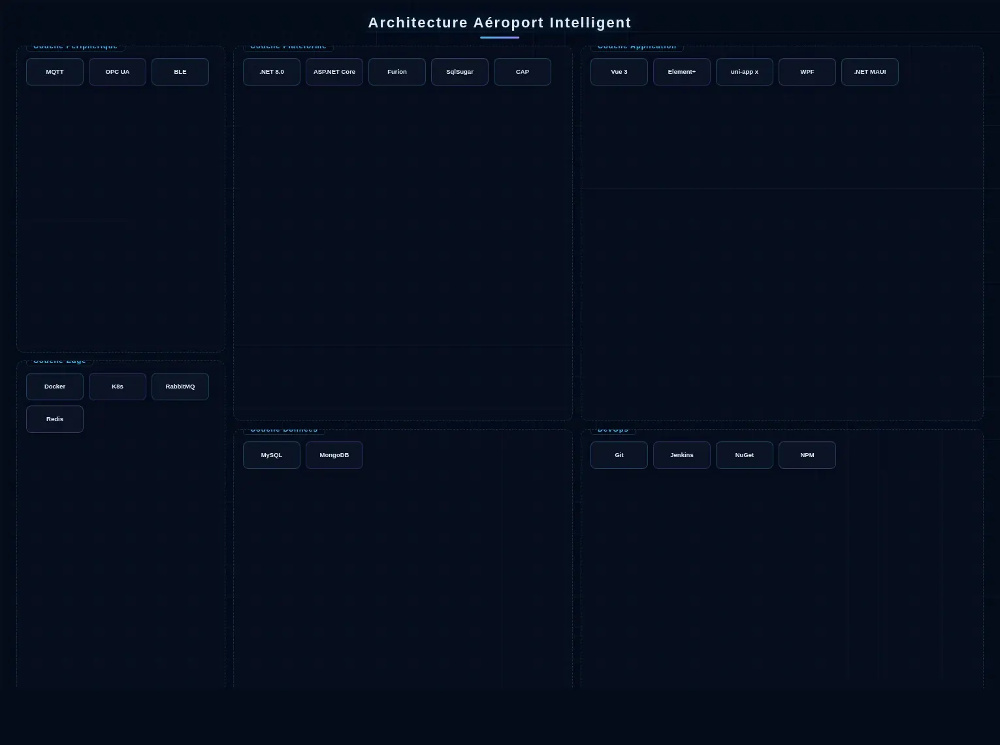

Architecture de la Solution

Architecture système intégré aéroport intelligent
La solution Aéroport Intelligent adopte une architecture collaborative Périphérie-Passerelle-Cloud. La couche périphérie couvre les dispositifs de perception IoT et les passerelles edge sur les terminaux, les aires de trafic et les zones cargo, acquérant les données locales via MQTT over TLS et OPC UA avec prétraitement sur site. La couche plateforme construit une plateforme de données intermédiaires sur des microservices .NET 8.0 + ASP.NET Core + Furion, avec DotNetCore.CAP supportant le bus d'événements distribué et les transactions à cohérence finale, des clusters RabbitMQ orchestrant la communication asynchrone pilotée par événements entre six sous-systèmes (sécurité, embarquement, bagages, FIDS, surveillance et BMS), Redis Cluster mettant en cache les dynamiques de vols fréquents et les trajectoires passagers, et SqlSugar fournissant le mappage ORM multi-sources. La couche données utilise MySQL pour les données structurées et MongoDB pour les journaux et les preuves vidéo non structurées. La couche application construit un tableau de bord de commande des opérations aéroportuaires et un back-office de gestion avec Vue 3 + Element Plus, et développe des services mobiles passagers avec uni-app x (Vapor Mode) pour les notifications de vol, la navigation intelligente et le voyage sans papier; les clients de gestion de bureau sont construits sur WPF ou .NET MAUI (sous-couche WinUI 3). La chaîne DevOps exploite Git + Jenkins + NuGet/NPM pour l'intégration et le déploiement continus, avec Docker + Kubernetes assurant le déploiement élastique et les publications canary.
Composition de la Solution
Scénarios d'Application

Services aux passagers
Enregistrement automatique, dépôt automatique des bagages, embarquement par reconnaissance faciale et push du statut des vols en temps réel.

Voies de sécurité
Analyse intelligente des images aux rayons X, vérification par reconnaissance faciale et guidage du flux de sécurité.

Gestion de l'aire de trafic
Allocation intelligente des portes, dispatching des véhicules au sol et monitoring de la trajectoire des avions.

Zone cargo
Suivi et positionnement des marchandises, surveillance environnementale des entrepôts et gestion de liaison sécurité.
Avantages de la Solution
Le système est conforme aux normes de sécurité de l'OACI, supporte l'adaptation multi-langue et multi-devise, et répond aux besoins opérationnels des aéroports hubs internationaux. La conception modulaire permet une construction par phases, permettant une transition en douceur des sous-systèmes isolés à l'intégration complète de l'aéroport, réduisant les risques d'investissement unique.
Valeur de la Solution
Amélioration de l'efficacité du débit des passagers, renforcement des capacités de sécurité, optimisation de l'utilisation des ressources aéroportuaires, et augmentation de la satisfaction des passagers et des revenus commerciaux de l'aéroport.
Pratique Projet
AXLTeco fournit des services de construction et de maintenance des systèmes basse tension et intelligents pour plusieurs aéroports au Nigéria, couvrant la vidéosurveillance sécurité, le contrôle d'accès et les systèmes de diffusion pour assurer des opérations aéroportuaires sûres et efficaces.